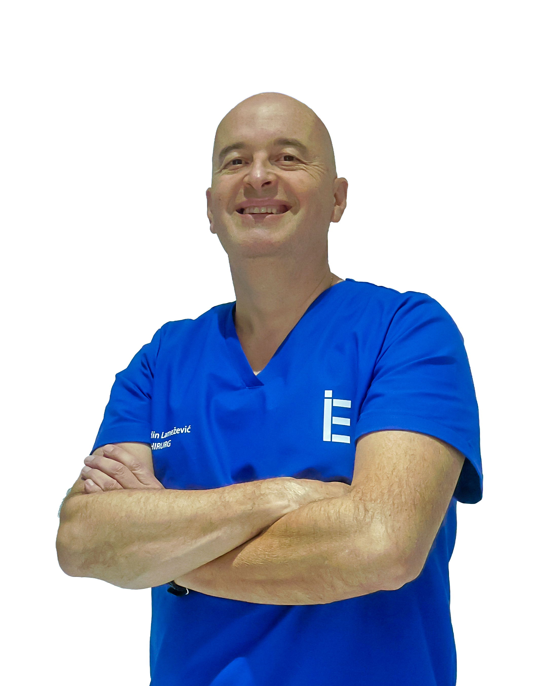
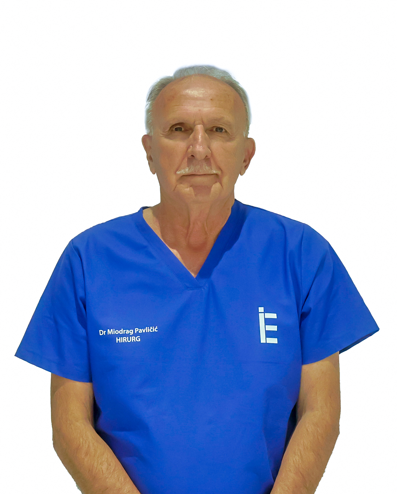
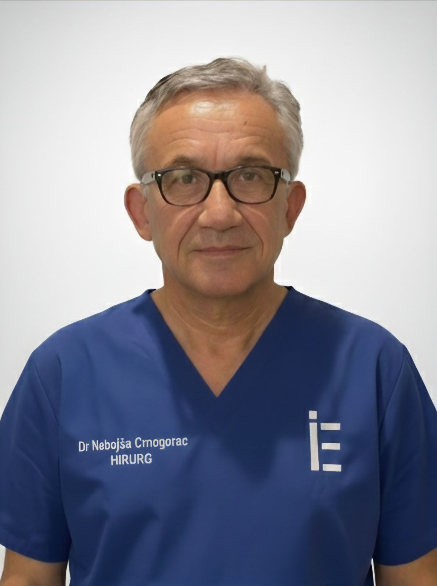
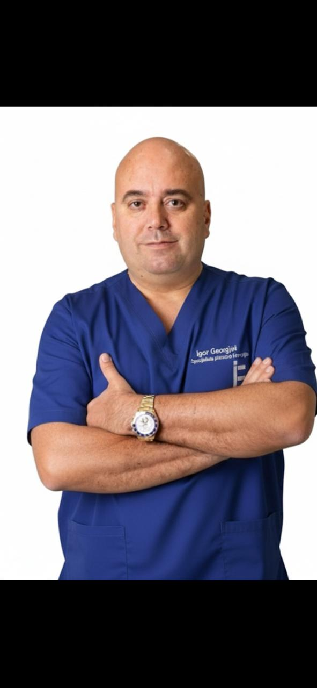
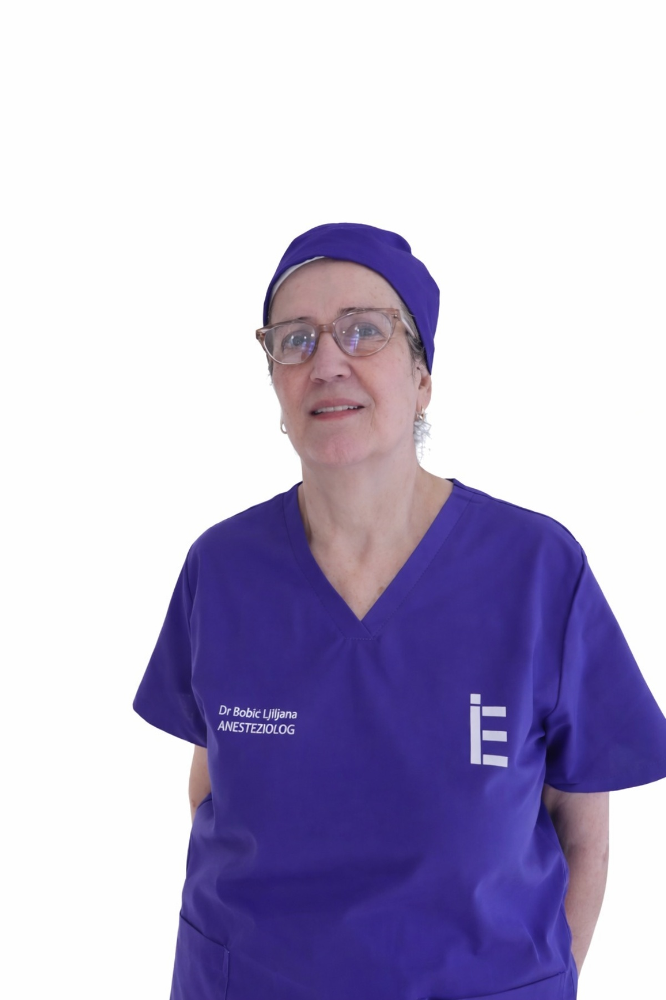
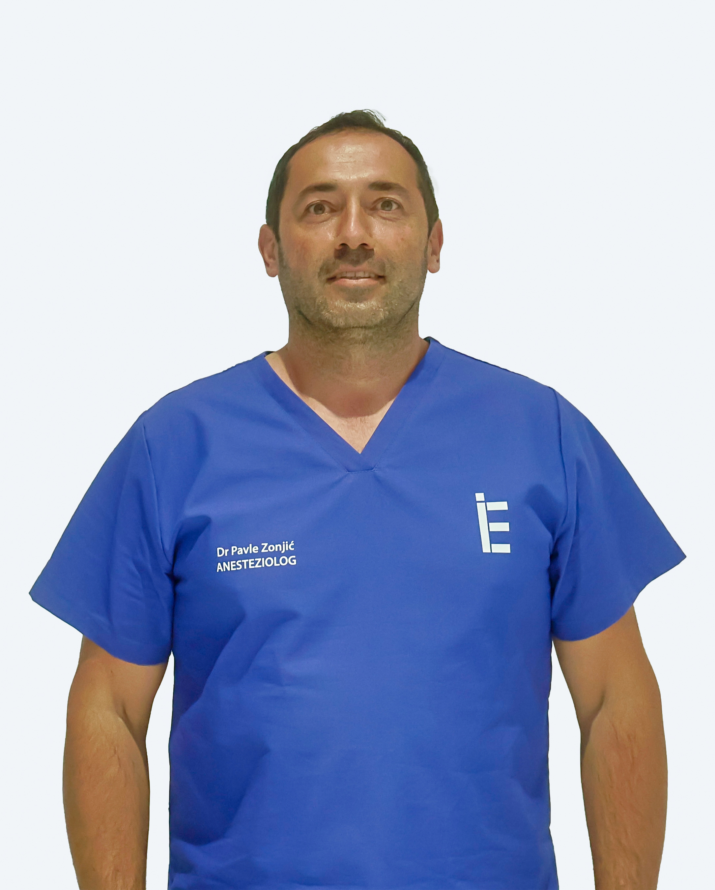
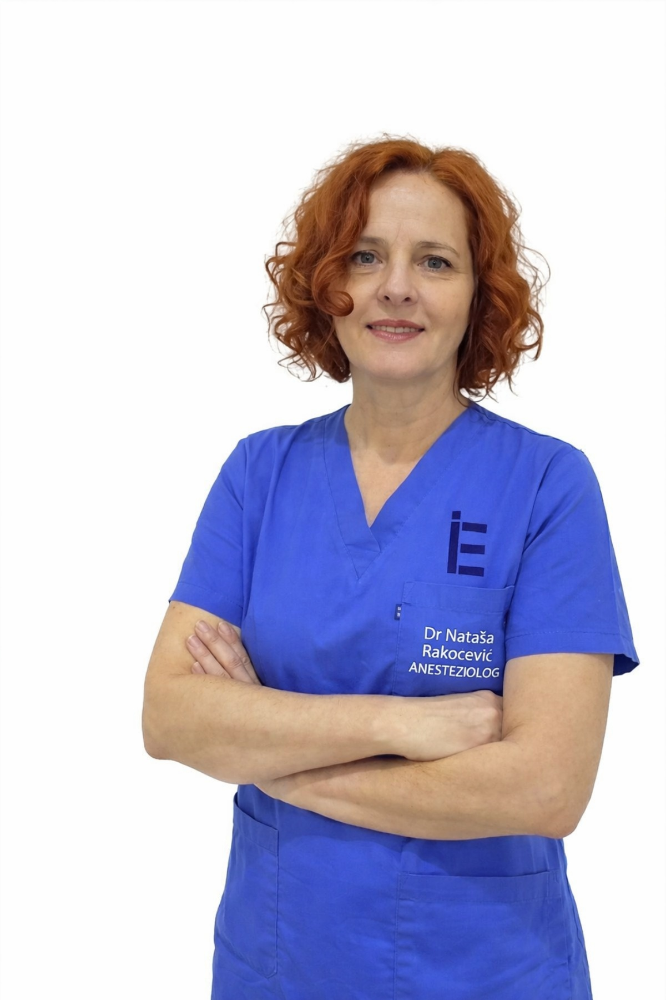
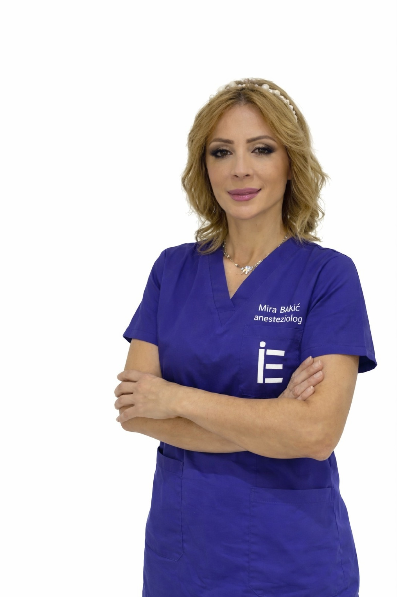
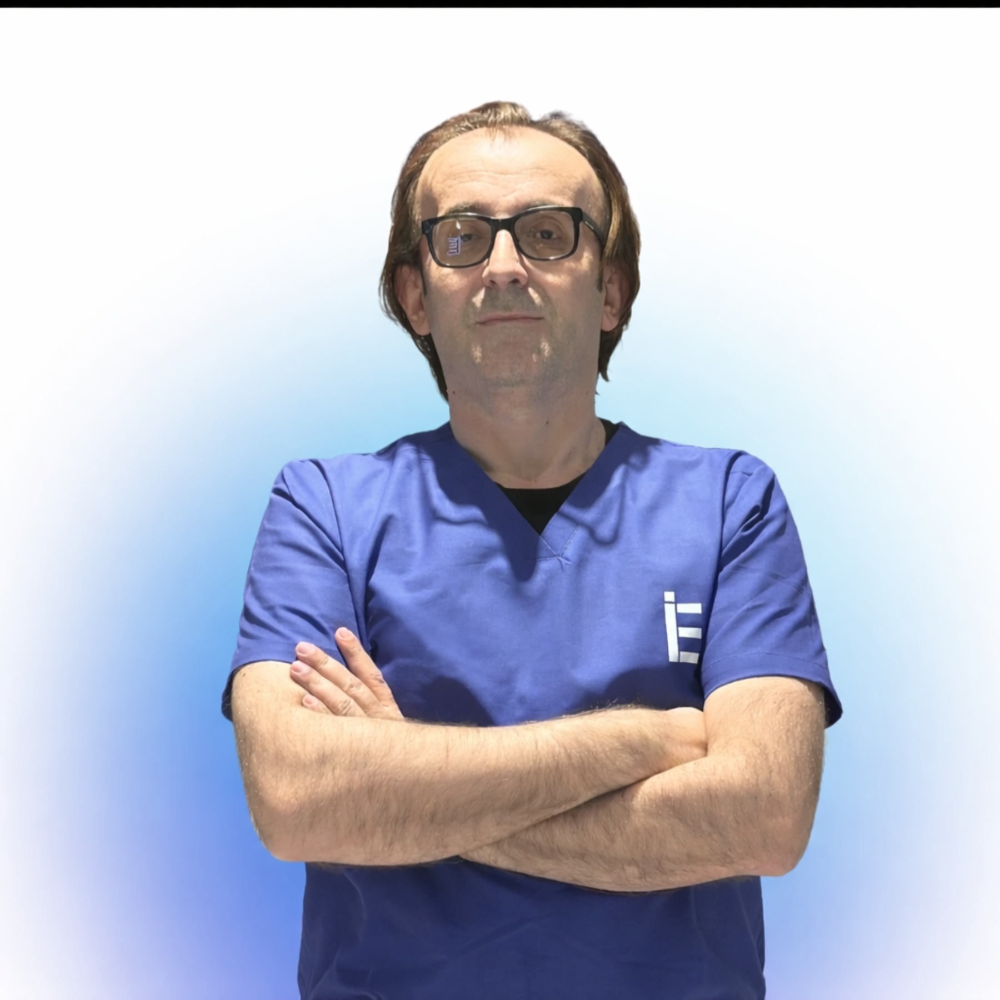
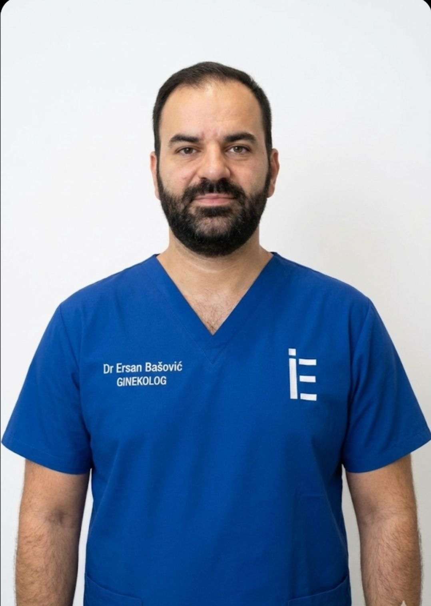

Šta je laparoskopska hirurgija
Laparoskopska hirurgija je savremena minimalno invazivna metoda operativnog liječenja koja se izvodi kroz male rezove na koži uz pomoć specijalnih instrumenata i kamere (laparoskopa).
Procitaj više...Moderna dijagnostika i individualni pristup svakom pacijentu. Brinemo o vašem zdravlju uz najnoviju medicinsku opremu i stručni tim.
Zakaži pregledHIRURGIJA Dr Eli je moderna bolnica sa poliklinikom, specijalizovana za oblast opšte i laparoskopske hirurgije, ginekologije i ultrazvučne dijagnostike. Naš tim čine iskusni ljekari i medicinsko osoblje posvećeni pružanju sigurne, kvalitetne i savremene zdravstvene usluge svakom pacijentu.
O namaSavremena medicinska njega i stručni tim posvećen vašem zdravlju.
Naš hirurški tim pruža savremene i sigurne operativne zahvate uz primjenu moderne medicinske opreme i naprednih metoda liječenja.
Pročitaj višeOdjel ginekologije pruža kompletnu zdravstvenu zaštitu žena, uključujući preventivne preglede, dijagnostiku i savremene terapije.
Pročitaj višeRadiološki odjel omogućava preciznu dijagnostiku uz pomoć savremenih uređaja za snimanje i analizu medicinskih nalaza.
Pročitaj višeU okviru bolnice sa poliklinikom moguće je obaviti sve vrste hirurških, ginekoloških i radioloških (ultrazvučnih) pregleda na jednom mjestu, uz savremenu opremu i visok standard medicinske njege. Naš cilj je da pacijentima pružimo sigurnost, stručnost i povjerenje – od prvog pregleda do potpunog oporavka.

specijalista opste hirurgije i osnivac.
Pročitaj više...
Specijalista opšte i grudne hirurgije.
Pročitaj više...
specijalista opšte hirurgije sa posebnim fokusom na hirurgiju dojke
Pročitaj više...
Specijalista plastične, rekonstruktivne i estetske hirurgije.
Pročitaj više...
Specijalista anesteziologije sa reanimatologijom i kardioanesteziolog.
Pročitaj više...
Specijalista anesteziologije sa reanimatologijom.
Pročitaj više...
Anesteziolog i subspecijalista kardioanestezije
Pročitaj više...
Specijalista anesteziologije sa reanimatologijom
Pročitaj više...
Specijalista ginekologije i akušerstva
Pročitaj više...
Specijalista ginekologije i akušerstva.
Pročitaj više...Laparoskopska hirurgija je savremena minimalno invazivna metoda operativnog liječenja koja se izvodi kroz male rezove na koži uz pomoć specijalnih instrumenata i kamere (laparoskopa).
Procitaj više...Ultrazvuk je dijagnostička metoda koja koristi visokofrekventne zvučne talase kako bi se dobila slika unutrašnjih organa i tkiva u tijelu.
Procitaj više...